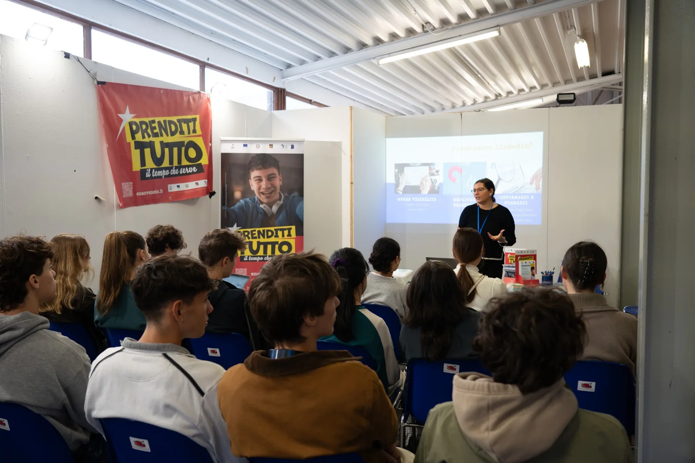

Per te che stai per diplomarti
Prova un colloquio, sistema il curriculum e chiedi a chi lavora com’è davvero la sua giornata. E scopri cosa puoi fare dopo il diploma, ITS compresi: i corsi tecnici post-diploma.
Seguici su InstagramOrientamento · Scuole · Imprese
E dopo il diploma? Qui trovi le risposte da chi il lavoro lo fa davvero.
Cos’è
Carriera 360° è la giornata di orientamento organizzata dal Consiglio Giovanile Bellunese ODV. Studenti delle superiori, aziende, ITS e associazioni si ritrovano nella stessa sala: si fanno domande, si prova un colloquio, si scopre quale strada somiglia di più a ognuno. Dal 2023 si svolge nel Bellunese e a ogni edizione cresce.
La giornata
Quattro cose che puoi fare durante la giornata.

Aziende, enti e associazioni a due passi da te. Avvicinati e chiedi tutto quello che vuoi.

Un colloquio vero, ma senza pressione, con chi assume davvero. Se va male non succede niente, ma impari tantissimo.

Workshop e laboratori per sporcarti le mani con attività pratiche.

Gli ITS e gli enti di formazione ti raccontano cosa puoi studiare dopo la scuola.
Per chi è
Prova un colloquio, sistema il curriculum e chiedi a chi lavora com’è davvero la sua giornata. E scopri cosa puoi fare dopo il diploma, ITS compresi: i corsi tecnici post-diploma.
Seguici su InstagramUna giornata di orientamento per le tue classi, vicino a casa. I ragazzi escono con qualche idea in più su cosa fare dopo.
Porta la tua classeVieni a conoscere i futuri colleghi: hanno tante domande e tanta voglia di capire. Porta uno stand, racconta chi sei e fai due chiacchiere (o un colloquio) con loro.
Partecipa con uno standLe edizioni
Tutto parte dalla ex Chiesa dei Gesuiti: per la prima volta scuole, aziende e associazioni del capoluogo si ritrovano nello stesso posto e arrivano più di 300 studenti. Girano tra gli stand, fanno domande a chi lavora davvero e si siedono per un colloquio individuale. Una giornata per scoprire che, dopo il diploma, le strade sono tante e che parlarne dal vivo è tutta un’altra cosa.
Si fa spazio: i ragazzi diventano tantissimi, più di 600 studenti, e l’evento si trasferisce a Longarone Fiere, con più di 45 stand. Tra un giro e l’altro ci sono colloqui, workshop e momenti di confronto con aziende e associazioni, ma anche tanto spazio per chiacchierare, curiosare e farsi un’idea concreta di cosa fanno davvero i professionisti.


Il giro si allarga: arrivano anche gli ITS, e il confronto diventa ancora più completo. Oltre ai colloqui e ai workshop, i ragazzi possono scoprire i percorsi tecnici post-diploma e capire quali strade esistono anche vicino a casa. Più voci, più idee, più possibilità di trovare quella giusta.
Dicono di noi
Giornali, tv e radio del territorio hanno raccontato le edizioni di Carriera 360°.
Scuola, azienda, associazione o studente: scrivici e ti teniamo aggiornato.